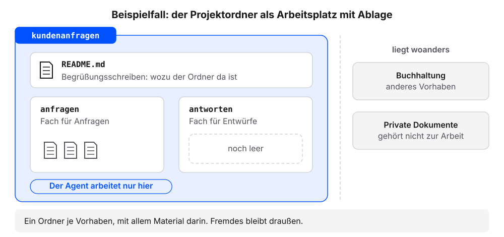
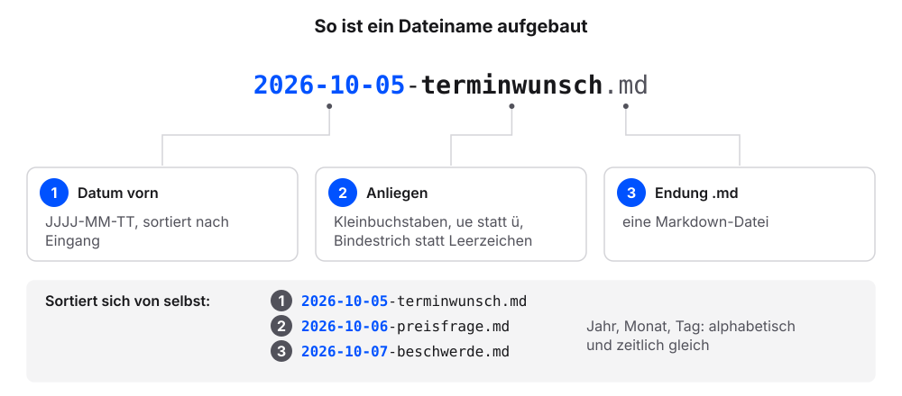
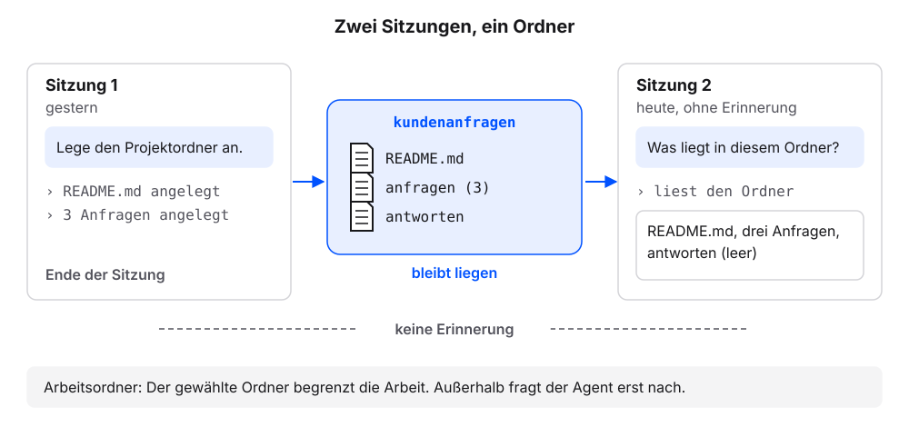

3 Der Projektordner: Arbeitsplatz mit Ablage
Der Projektordner ist der Arbeitsplatz des Agenten, mit einer beschrifteten Ablage. Alles, was er kennen soll, liegt dort als Datei. Zugleich ist der Ordner die Grenze seiner Arbeit. Wie gut der Agent arbeitet, hängt deshalb stark davon ab, wie der Ordner aufgebaut ist: ob die Dateien sprechende Namen tragen, ob jede Art von Material einen festen Platz hat und ob eine kurze Beschreibung sagt, wozu der Ordner da ist. Der Agent lässt den Ordner kundenanfragen Schritt für Schritt entstehen; alle folgenden Kapitel bauen darauf auf. Die Erklärung folgt jeweils am eigenen Ergebnis.
Voraussetzung: Der Agent besteht den Selbsttest aus dem Kapitel Chat oder Agent?. Die Dateien im Ordner agent-test brauchen wir nicht mehr.
3.1 Schritt 1: Den Projektordner anlegen
In der App den Ordner wählen, in dem die eigenen Projekte liegen sollen, etwa
Dokumente. Der Weg ist derselbe wie im Kapitel Chat oder Agent?, Schritt 1.Diesen Auftrag senden:
Lege den Projektordner kundenanfragen an. Darin die Ordner anfragen und antworten und eine Datei README.md mit drei Sätzen: Der Ordner sammelt Kundenanfragen eines kleinen Betriebs, Antworten entstehen als Entwürfe in antworten, Anfragen liegen als Markdown in anfragen. Zeige mir vorher den Plan und frage, bevor du etwas anlegst.Prüfen: Der Agent zeigt den Plan und fragt vor dem Anlegen.
Den Plan freigeben.
Diese Frage senden:
Liste alle Dateien und Ordner in kundenanfragen auf. Zeig mir dann den Inhalt von kundenanfragen/README.md genau so, wie er in der Datei steht, mit allen Zeichen.Prüfen: Die Liste nennt
README.md,anfragenundantworten.Prüfen: Die Datei nennt den Zweck des Ordners und sagt, was in
anfragenundantwortenliegt.
3.1.1 Das sollten wir jetzt sehen
Der Verlauf im Chat, sinngemäß:
Der Wortlaut des Plans und der drei Sätze kann abweichen. Ordner und Datei liegen auf der Festplatte, im Ordner Dokumente.
3.1.2 Was gerade passiert ist
Wir haben den Ordner beschrieben, der Agent hat ihn angelegt. Der Auftrag verlangte zuerst den Plan. So sahen wir, was entstehen soll, bevor etwas auf der Festplatte landet. Ein Plan lässt sich leichter korrigieren als ein fertiger Ordner.
Ein Projektordner ist ein Ordner je Vorhaben, mit allem Material darin. Für unser Beispiel heißt er kundenanfragen. Darin liegen die eingegangenen Anfragen, die Antwortentwürfe und später Preislisten, Regeln und Abläufe. Material für andere Vorhaben, etwa die Buchhaltung oder private Dokumente, liegt woanders. Diese Trennung hat zwei Gründe. Erstens weiß der Agent ohne weitere Erklärung, womit er arbeiten soll: mit allem, was im Ordner liegt. Zweitens ist klar, was er lesen und ändern darf.
Die README.md beschreibt für Menschen in wenigen Sätzen, wozu der Ordner da ist und was darin liegt. Der Name ist eine alte Konvention aus der Softwareentwicklung und bedeutet „lies mich“. Für jeden Neuen am Arbeitsplatz ist sie das Begrüßungsschreiben: worum es hier geht. Wer den Ordner in einem Jahr öffnet oder ihn an eine Kollegin weitergibt, weiß damit sofort Bescheid. Der Agent liest die README.md ebenfalls, wenn er sich einen Überblick verschafft. Regeln für den Agenten gehören aber in eine eigene Datei, die AGENTS.md. Sie ist Thema des Kapitels AGENTS.md: die Hausordnung.

- Der Plan nennt einen anderen Ort als gewünscht: ablehnen, in der App den richtigen Ordner wählen (Kapitel Chat oder Agent?, Schritt 1) und den Auftrag erneut senden.
- Der Agent hat den Ordner an einem anderen Ort angelegt, etwa direkt im Benutzerordner: „Verschiebe den Ordner kundenanfragen in den Ordner Dokumente.“
- Die Liste nennt die Ordner
anfragenundantwortennicht: „Liste auch leere Ordner auf.“ - In
anfragenoderantwortenliegt eine Datei.gitkeep: Das ist eine leere Platzhalterdatei. Manche Agenten legen sie an, damit ein leerer Ordner erhalten bleibt. Das ist in Ordnung. - Die
README.mdist anders formuliert oder hat keine Überschrift: Das ist in Ordnung, solange die drei Aussagen darin stehen.
3.2 Schritt 2: Die Beispielanfragen anlegen
Voraussetzung: Der Ordner kundenanfragen mit anfragen und antworten liegt vor. Der Chat aus Schritt 1 ist offen.
Diesen Auftrag für die Beispielanfragen senden:
Lege im Ordner anfragen drei Dateien an, jede mit genau diesem Inhalt. Erfinde nichts dazu. Datei 2026-10-05-terminwunsch.md: # Terminwunsch - Datum: 2026-10-05 - Kanal: E-Mail - Anliegen: Termin für eine Reparatur Guten Tag, ich möchte einen Termin für eine Reparatur. Passt es nächste Woche am Dienstag oder Mittwoch vormittags? Datei 2026-10-06-preisfrage.md: # Preisfrage - Datum: 2026-10-06 - Kanal: Kontaktformular - Anliegen: Preis für eine Reparatur Guten Tag, was kostet bei Ihnen eine Reparatur? Und kommt eine Anfahrt dazu, wenn Sie zu mir kommen? Datei 2026-10-07-beschwerde.md: # Beschwerde - Datum: 2026-10-07 - Kanal: E-Mail - Anliegen: Reparatur nicht rechtzeitig fertig Guten Tag, die Reparatur war für Freitag zugesagt. Bis heute habe ich keine Nachricht. Bitte melden Sie sich. Frage, bevor du die Dateien anlegst.Das Anlegen freigeben.
Diese Frage senden:
Liste die Dateien im Ordner anfragen auf. Zeig mir dann den Inhalt von anfragen/2026-10-07-beschwerde.md genau so, wie er in der Datei steht, mit allen Zeichen.Prüfen: Die Liste nennt drei Dateien. Jeder Name beginnt mit einem Datum, etwa
2026-10-05-terminwunsch.md.Prüfen: Zeile 1 lautet
# Beschwerde. Darunter stehen Datum, Kanal und Anliegen als Liste.
3.2.1 Das sollten wir jetzt sehen
Die Liste nennt die Dateien in der Reihenfolge ihres Datums, weil das Datum vorn im Namen steht.
3.2.2 Was gerade passiert ist
Der Auftrag gab Dateinamen und Inhalt wörtlich vor, und der Agent sollte nichts dazuerfinden. So hat jeder Ordner dieselben Dateien, und die Prüfungen der folgenden Kapitel passen.
Die Dateinamen folgen einer Namenskonvention, einer festen Regel für Datei- und Ordnernamen. Für unseren Projektordner gilt:
- nur Kleinbuchstaben
- keine Umlaute und kein ß (
ae,oe,ue,ssstattä,ö,ü,ß) - keine Leerzeichen, Bindestrich statt Leerzeichen
- das Datum vorn im Format
JJJJ-MM-TT, danach das Anliegen
Die Regeln haben praktische Gründe. Das Datum vorn sortiert die Dateien von selbst nach Eingang, weil Jahr, Monat und Tag in dieser Reihenfolge alphabetisch und zeitlich gleich sortieren. Leerzeichen und Umlaute machen Probleme in Links und bei vielen Programmen: Ein Leerzeichen trennt an vielen Stellen zwei Angaben, und ein ü wird auf manchen Systemen anders gespeichert als auf anderen.

| Dateiname | Passt? | Grund |
|---|---|---|
2026-10-05-terminwunsch.md |
ja | Datum vorn, Kleinbuchstaben, Bindestriche |
2026-10-08-rueckruf.md |
ja | Umlaut als ue geschrieben |
Beschwerde vom Montag.md |
nein | Großbuchstabe, Leerzeichen, kein Datum |
preisfrage_okt.md |
nein | Unterstrich, kein vollständiges Datum |
rückruf-2026-10-09.md |
nein | Umlaut, Datum hinten, sortiert nicht nach Eingang |
Der letzte Name wird am häufigsten übersehen. Er sieht ordentlich aus, enthält aber ein ü, und weil das Datum hinten steht, sortiert sich die Datei nach dem Anliegen statt nach dem Eingang.
Unterordner sortieren wir nach der Art des Materials: ein Ordner für Anfragen, einer für Antwortentwürfe, später einer für Quellen. Ordner je Monat oder je Person führen in die Irre. Ein Kollege legt etwa pro Monat einen Ordner an (oktober, november, dezember) und speichert darin alles zusammen: Anfragen, Antwortentwürfe, Preislisten. Nach einem Jahr soll der Agent alle Beschwerden finden. Weil die Art des Materials nicht im Pfad steht, muss er alle zwölf Ordner durchsuchen und jede Datei erst einordnen. Bei einem Ordner je Art liegen alle Anfragen im Ordner anfragen, und jede Beschwerde trägt ihr Anliegen im Dateinamen. Ein Blick auf die Dateiliste reicht.
Die Namen müssen wir nicht selbst tippen. Es genügt, die Konvention im Auftrag zu nennen, etwa „Dateiname mit Datum vorn, JJJJ-MM-TT-anliegen.md“. Im Kapitel AGENTS.md: die Hausordnung lernen wir, wie solche Regeln dauerhaft gelten, ohne dass wir sie wiederholen.
- Der Agent ergänzt Text oder Namen: ablehnen und den Auftrag erneut senden. „Erfinde nichts dazu“ senkt das Risiko, schließt es aber nicht aus.
- Die Dateien liegen direkt in
kundenanfragenstatt inanfragen: „Verschiebe die drei Anfragen in den Ordner anfragen.“ - Die Liste nutzt
*statt-: Das ist in Ordnung. Beide Zeichen machen einen Listenpunkt.
3.3 Schritt 3: In einer neuen Sitzung prüfen
Voraussetzung: kundenanfragen enthält README.md, anfragen mit drei Dateien und antworten.
In der App den Ordner
kundenanfragenwählen. Der Weg ist derselbe wie im Kapitel Chat oder Agent?, Schritt 1, nur mit diesem Ordner.In der App einen neuen Chat beginnen. Das ist eine neue Sitzung: Der Agent erinnert sich nicht an Schritt 1 und 2.
Diese Frage senden:
Was liegt in diesem Ordner?Prüfen: Die Antwort nennt
README.mdund drei Dateien inanfragen.Diese Frage senden:
In welchem Ordner arbeitest du gerade, und kannst du Dateien außerhalb dieses Ordners lesen oder ändern? Nur antworten.Prüfen: Die Antwort nennt den Ordner
kundenanfragen.
Prüfkriterium: Der Projektordner kundenanfragen enthält README.md, den Ordner anfragen mit drei Anfragen und den Ordner antworten.
3.3.1 Das sollten wir jetzt sehen
Beispielantworten; Wortlaut und Zugriffsregeln unterscheiden sich je Werkzeug und Einstellung:
3.3.2 Was gerade passiert ist
Der Agent kannte den Ordner, ohne dass wir ihm etwas erklärt haben. Er hat ihn in der neuen Sitzung selbst gelesen. Eine Sitzung ist eine Unterhaltung mit dem Agenten vom Start bis zum Schließen. Eine neue Sitzung beginnt ohne Erinnerung an die vorige. Was der Agent wissen soll, muss deshalb als Datei im Ordner liegen.

Der Arbeitsordner, den wir in der App gewählt haben, begrenzt die Arbeit des Agenten. Die meisten Agenten arbeiten nur in diesem Ordner und fragen nach, bevor sie außerhalb etwas öffnen. Ein eigener Ordner je Vorhaben hält damit Fremdes außen vor, ohne dass wir es eigens verbieten müssen. Wie weit der Zugriff reicht, hängt vom Werkzeug und seinen Einstellungen ab; darum die zweite Frage. Sagt der Agent, dass er auch außerhalb lesen oder ändern kann, verdienen die Pfade in seinen Rückfragen besondere Aufmerksamkeit.
Nach diesem Kapitel enthält unser Projektordner README.md, drei Anfragen in anfragen und den leeren Ordner antworten. In den folgenden Kapiteln kommen die Hausordnung AGENTS.md, eine Übersichtsdatei, ein Ordner für Quellen und ein Eingangsordner für neue Dateien hinzu.
Ab jetzt in der App immer direkt den Ordner kundenanfragen wählen. Ist der übergeordnete Ordner gewählt, sieht der Agent auch die übrigen Dokumente. Dann gelten die Regeln aus dem nächsten Kapitel nicht verlässlich.
- Die Antwort nennt auch Dateien außerhalb von
kundenanfragen: In der App ist noch der übergeordnete Ordner gewählt.kundenanfragenwählen und einen neuen Chat beginnen. - Es gibt keinen Button für einen neuen Chat: Nach der Ordnerwahl ist der Chat meist leer. Das genügt als neue Sitzung.
- Der Agent sagt, er könne auch außerhalb lesen oder ändern: dann besonders auf die Pfade in seinen Rückfragen achten.
- Die Antwort erwähnt
antwortennicht: Leere Ordner übersehen manche Agenten. Das ist in Ordnung.